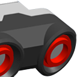
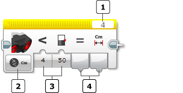
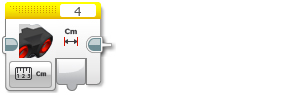
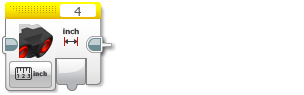
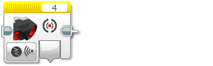
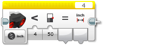
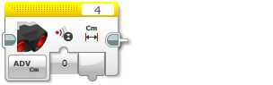
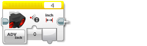

					<table cellpadding="0" cellspacing="0" border="0"><tbody><tr><td>
	
						<h1>超声波传感器模块<a name="top"></a></h1>
		<div id="block_937" class="block blockHeader">
				<table cellspacing="0" cellpadding="0" border="0">
			<tbody><tr>
				<td valign="top" class="image"></td>
				<td valign="top" class="description"><div class="text-wrapper">超声波传感器模块从超声波传感器获取数据。可以测量距离（以英寸或厘米为单位）并获取数字输出。还可以将距离与阈值进行比较以获取逻辑（“真”或“伪”）输出。还可以在“仅侦听”模式中检测其他超声波信号。<br>
<br>
有关超声波传感器的作用、它提供的数据以及编程示例的更多信息，请参见<a href="./index.html?id=UsingSensors_Ultrasonic">使用超声波传感器</a>帮助。</div></td>
			</tr>
		</tbody></table>
			</div>
	<div id="block_938" class="block blockTip">
		<div class="title">提示和技巧</div>
		<div class="boxContent">
			<div class="description">超声波传感器模块通过<a href="./index.html?id=DataWires">数据线</a>输出数据。有关无需数据线的其他使用超声波传感器的方式，请参见<a href="./index.html?id=UsingSensors_Ultrasonic">使用超声波传感器</a>。</div>
				</div>
	</div>
	<div id="block_940" class="block blockChaptor">
		<div class="title"><a name="ChooseTheSensorPortAndMode" style="position:relative; top:-10px;"></a>选择传感器端口和模式</div>
		<div class="description"><br>
<br>
<br>
 端口选择器 <br>
 模式选择器<br>
 输入<br>
 输出<br>
<br>
使用模块顶部的<a href="./index.html?id=PortSelector">端口选择器</a>可确保传感器端口号（1、2、3 或 4）与超声波传感器连接的 EV3 程序块上的端口匹配。<br>
<br>
使用模式选择器可为模块选择模式。可用<a href="./index.html?id=UltrasonicSensor#InputsAndOutputs">输入和输出</a>会因模式而异。</div>
	</div>
	<div id="block_941" class="block blockChaptor">
		<div class="title"><a name="Modes" style="position:relative; top:-10px;"></a>模式</div>
		<div class="description"></div>
	</div>
	<div id="block_942" class="block blockMode">
		<div class="title"><a name="Mode_MeasureCentimeters" style="position:relative; top:-10px;"></a>测量 － 距离 － 厘米</div>
		<div class="description"><br>
<br>
“测量 － 距离 － 厘米”模式在<a href="./index.html?id=UltrasonicSensor#Distance">距离（厘米）</a>中输出距离（以厘米为单位）。</div>
			<div class="links">请参见<a href="./index.html?id=UsingSensors_Ultrasonic">使用超声波传感器</a>中的编程示例 3。</div>
	</div>
	<div id="block_943" class="block blockMode">
		<div class="title"><a name="Mode_MeasureInches" style="position:relative; top:-10px;"></a>测量 － 距离 － 英寸</div>
		<div class="description"><br>
<br>
“测量 － 距离 － 英寸”模式在<a href="./index.html?id=UltrasonicSensor#DistanceInches">距离（英寸）</a>中输出距离（以英寸为单位）。</div>
	</div>
	<div id="block_944" class="block blockMode">
		<div class="title"><a name="Mode_MeasurePresence" style="position:relative; top:-10px;"></a>测量 － 存在</div>
		<div class="description"><br>
<br>
“测量 － 存在”模式在“仅侦听”模式中侦听其他超声波信号。如果检测到信号，则<a href="./index.html?id=UltrasonicSensor#Heard">检测到超声波</a>输出将为“真”，否则为“伪”。</div>
	</div>
	<div id="block_945" class="block blockMode">
		<div class="title"><a name="Mode_CompareCentimeters" style="position:relative; top:-10px;"></a>比较 － 距离 － 厘米</div>
		<div class="description"><br>
<br>
“比较 － 距离 － 厘米”模式使用所选<a href="./index.html?id=UltrasonicSensor#Comparison">比较类型</a>将距离（以厘米为单位）与<a href="./index.html?id=UltrasonicSensor#Threshold">阈值</a>进行比较。“真/伪”结果在<a href="./index.html?id=UltrasonicSensor#Result">比较结果</a>中输出，距离（以厘米为单位）在<a href="./index.html?id=UltrasonicSensor#Distance">距离（厘米）</a>中输出。</div>
	</div>
	<div id="block_946" class="block blockMode">
		<div class="title"><a name="Mode_CompareInches" style="position:relative; top:-10px;"></a>比较 － 距离 － 英寸</div>
		<div class="description"><br>
<br>
“比较 － 距离 － 英寸”模式使用所选<a href="./index.html?id=UltrasonicSensor#Comparison">比较类型</a>将距离（以英寸为单位）与<a href="./index.html?id=UltrasonicSensor#Threshold">阈值</a>进行比较。“真/伪”结果在<a href="./index.html?id=UltrasonicSensor#Result">比较结果</a>中输出，距离（以英寸为单位）在<a href="./index.html?id=UltrasonicSensor#DistanceInches">距离（英寸）</a>中输出。</div>
	</div>
	<div id="block_947" class="block blockMode">
		<div class="title"><a name="Mode_ComparePresence" style="position:relative; top:-10px;"></a>比较 － 存在</div>
		<div class="description"><br>
<br>
“比较 － 存在”模式在“仅侦听”模式中侦听其他超声波信号。如果检测到信号，则<a href="./index.html?id=UltrasonicSensor#Heard">检测到超声波</a>输出将为“真”，否则为“伪”。</div>
	</div>
	<div id="block_948" class="block blockMode">
		<div class="title"><a name="Mode_Centimeters" style="position:relative; top:-10px;"></a>高级 － 厘米</div>
		<div class="description"><br>
<br>
“高级 － 厘米”模式类似于“测量 － 距离 － 厘米”模式，只不过可以使用<a href="./index.html?id=UltrasonicSensor#MeasuringMode">测量模式</a>输入选择传感器是发送单个超声波信号还是连续信号。距离（以厘米为单位）在<a href="./index.html?id=UltrasonicSensor#Distance">距离</a>中输出。</div>
	</div>
	<div id="block_949" class="block blockMode">
		<div class="title"><a name="Mode_Inches" style="position:relative; top:-10px;"></a>高级 － 英寸</div>
		<div class="description"><br>
<br>
“高级 － 英寸”模式类似于“测量 － 距离 － 英寸”模式，只不过可以使用<a href="./index.html?id=UltrasonicSensor#MeasuringMode">测量模式</a>输入选择传感器是发送单个超声波信号还是连续信号。距离（以英寸为单位）在<a href="./index.html?id=UltrasonicSensor#DistanceInches">距离</a>中输出。</div>
	</div>
	<div id="block_950" class="block blockTip">
		<div class="title">提示和技巧</div>
		<div class="boxContent">
			<div class="description">在“测量 － 距离 － 厘米”和“测量 － 距离 － 英寸”模式中，传感器始终发送连续超声波信号。</div>
				</div>
	</div>
	<div id="block_952" class="block blockChaptor">
		<div class="title"><a name="InputsAndOutputs" style="position:relative; top:-10px;"></a>输入与输出 <a name="Parameters" style="position:relative; top:-10px;"></a></div>
		<div class="description">可用于超声波传感器模块的输入取决于所选模式。可以将输入值直接输入到模块中。或者，可以通过<a href="./index.html?id=DataWires">数据线</a>从其他编程模块的输出提供输入值。</div>
	</div>
	<div id="block_953" class="block blockTable ">
		<table class="blockTable">
		

			<tbody><tr>
<th>输入</th><th>类型</th><th>允许的值</th><th>备注</th>			</tr>
<tr><td>比较类型 <a name="Comparison" style="position:relative; top:-10px;"></a></td><td>数字</td><td>0 － 5</td><td>0：=（等于）<br>
1：≠（不等于）<br>
2：&gt;（大于）<br>
3：≥（大于或等于）<br>
4：&lt;（小于）<br>
5：≤（小于或等于）</td></tr><tr><td>阈值 <a name="Threshold" style="position:relative; top:-10px;"></a></td><td>数字</td><td>任何数字</td><td>要将传感器数据与之进行比较的值</td></tr><tr><td>测量模式 <a name="MeasuringMode" style="position:relative; top:-10px;"></a></td><td>数字</td><td>0 或 1</td><td>“高级”模式中的超声波信号模式：<br>
0 = 脉冲<br>
1 = 连续</td></tr>		</tbody></table>
	</div>
	<div id="block_954" class="block blockStep">
		<div class="title"></div>
		<div class="description">可用输出取决于所选模式。要使用某个输出，请使用<a href="./index.html?id=DataWires">数据线</a>将该输出连接到另一个编程模块。</div>
	</div>
	<div id="block_955" class="block blockTable ">
		<table class="blockTable">
		

			<tbody><tr>
<th>输出</th><th>类型</th><th>备注</th>			</tr>
<tr><td>距离（厘米） <a name="Distance" style="position:relative; top:-10px;"></a></td><td>数字</td><td>以厘米为单位的距离（0-255 厘米）。</td></tr><tr><td>距离（英寸） <a name="DistanceInches" style="position:relative; top:-10px;"></a></td><td>数字</td><td>以英寸为单位的距离（0-100 英寸）。</td></tr><tr><td>检测到超声波 <a name="Heard" style="position:relative; top:-10px;"></a></td><td>逻辑</td><td>如果检测到超声波信号，则为“真”，否则为“伪”。</td></tr><tr><td>比较结果 <a name="Result" style="position:relative; top:-10px;"></a></td><td>逻辑</td><td>比较模式的“真/伪”结果。</td></tr>		</tbody></table>
	</div>
	
			<div id="quick">
				<div class="header"><a href="./index.html?id=UltrasonicSensor#header">超声波</a></div>
					<div class="quickText">快速链接</div>
					
					<ul>
	<li><a href="./index.html?id=UltrasonicSensor#ChooseTheSensorPortAndMode">选择传感器端口和模式</a></li><li><a href="./index.html?id=UltrasonicSensor#Modes">模式</a></li><li><a href="./index.html?id=UltrasonicSensor#InputsAndOutputs">输入与输出</a></li>					</ul>
			</div>
	
	</td></tr></tbody></table>